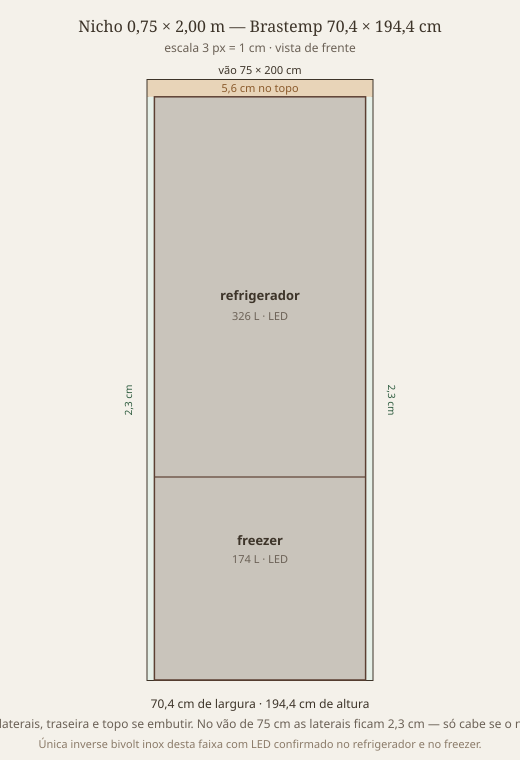

Inverse, inverter, frost free, bivolt, inox, luz no refrigerador e no congelador. Vão 0,75 × 2,00 m. Pílulas no comparativo mostram ou escondem cada modelo.
Frost free · inverter · bivolt · inox · luz no refrigerador e no freezer
Recomendação.
Comprar a Brastemp Inverse 500 L inox BRE66AK:
70,4 × 194,4 × 74,05 cm (folga 4,6 cm na largura, 5,6 cm na altura),
frost free, Xpert Inverter, inverse, bivolt, inox,
LED no refrigerador e no freezer (guia rápido oficial, item 19).
R$ 4.399 à vista na Colombo e no Magazine Luiza em 4/9/2026.
É a única desta lista que fecha o pacote inteiro, inclusive a luz nos dois compartimentos.
Só faz sentido se o vão for aberto nas laterais: o manual pede 10 cm se embutir.
Premissas
O vão é 75 × 200 cm. Profundidade não foi limitada — a atual tem 75,8 cm.
Inverse = refrigerador em cima, freezer embaixo. A Panasonic atual é o contrário (duplex com freezer em cima).
Bivolt de verdade (liga em 127 V e 220 V). A atual é só 220 V; Panasonic, Consul, LG e Electrolux IB7S/IB51S/IB54S continuam em voltagem fixa.
Inox inclui “cor inox” e Inox Look. Quase ninguém usa chapa de inox maciça nas portas.
Luz interna no refrigerador e no congelador. Sem iluminação em um dos dois, fica de fora. Na faixa que cabe neste vão, só a Brastemp BRE66 confirma LED no freezer (guia rápido). Electrolux IB6S/IB6B: ficha oficial “iluminação no freezer: não”. Midea 416 e 401: manual fala em LED do refrigerador; Colombo na 401 lista só “iluminação do refrigerador”.
Tubo de cobre quase nunca aparece na ficha. Confirmar na assistência antes de fechar se isso for inegociável.
Folga de ventilação: Brastemp pede 10 cm laterais, traseira e topo se embutir em móvel. No vão de 75 cm a BRE66 de 70,4 cm deixa 2,3 cm por lado — não atende o manual de nicho fechado. Midea 416 pede 3 cm laterais e 10 cm no topo.
Circuito de 4/9/2026: Colombo (BRE66AK R$ 4.399 PIX; Midea 401 listada, preço não veio na ficha estática). Mercado Livre (muro de login; loja Brastemp lista a BRE66AK sem preço público). Shopee (Midea 416 e 401 a R$ 3.599; BRE66AK a partir de R$ 4.525). Magazine Luiza (categoria inverse com Midea 416, IB6S e BRE66AK; Zoom R$ 4.399,20 à vista na BRE66AK; fetch direto 403). MadeiraMadeira (Midea 416 esgotada; BRE66AK listada, preço não capturado). Madesa (só porta-geladeira, sem refrigerador). Leroy Merlin (Midea 416 e Electrolux IB6S; BRE66AK não apareceu).
Preços conferidos em 4/9/2026; frete e CEP alteram o valor final.

Brastemp no vão de 75 × 200 cm. Folga 2,3 cm por lado e 5,6 cm no topo.↑ Índice
Panasonic atual
A máquina de hoje é a Panasonic NR-BT55PV2XB (dezembro/2020, Extrema-MG). Frost free, inverter, inox — mas não é inverse e não é bivolt.
Fora da tabela: Midea 401 L inox MDRB548FGD463 (59,5 × 186 × 67 cm, bivolt, Colombo; ficha lista LED só no refrigerador). Electrolux IB7S/IB51S/IB54S (490 L, 69,9 × 189,5 cm, voltagem fixa; IB7S e IB51S sem luz no freezer). Consul CRE45MK (399 L, 62 × 184,9 cm, voltagem fixa). LG GC-B569 (70 × 185 × 70 cm, voltagem fixa, LED só no refrigerador). Samsung RB50 (75,9 cm de largura — passa do vão). Hisense RB5P504 (79,4 cm). Brastemp BRE80 e Electrolux DB84 (mais de 83 cm; têm luz no freezer, mas não cabem). Panasonic BB71 (195 cm).
Loja: Colombo · também Magalu (busca BRE66AK) · extra Lebes R$ 4.179,90 PIX
Preço:R$ 4.399 à vista / PIX (Colombo e Magalu via Zoom) · Shopee a partir de R$ 4.525 · 10× R$ 488,80 no Magalu
Estoque: Colombo e Magalu à venda em 4/9/2026. MadeiraMadeira listou; Leroy não mostrou o modelo. Mercado Livre: loja oficial sem preço público (login).
Medidas: 70,4 × 194,4 × 74,05 cm · 73,8 kg (guia rápido BRE66)
Folga no vão: 4,6 cm de largura · 5,6 cm de altura
Capacidade: 500 L · refrigerador 326 L · freezer 174 L
O que fecha: LED refrigerador e LED freezer (itens 1 e 19 do guia rápido)
Funções: Fresh Space, Fresh Protein com IA, alarme de porta, painel LED externo, Twist Ice
A que mais se aproxima (e passa) os 483 L atuais, com o maior freezer da categoria de 70 cm. Altura justa: 5,6 cm no topo. Manual pede 10 cm laterais se o nicho for fechado — neste vão isso não existe. Extra: Lebes R$ 4.179,90 no Pix (fora do circuito das sete lojas).
O que falha: luz no congelador não consta. Manual: “lâmpadas de LED do refrigerador”. Irmã 401 L na Colombo: só “iluminação do refrigerador: LED branco”.
Funções: painel touch, Turbo Freezer, Modo Compras, Ice Maker Twist
A mais rasa da lista (66,6 cm) e a mais barata do circuito. Freezer de 100 L é o menor. Manual pede 3 cm laterais: no nicho fechado faltam 5 mm por lado. Fecha inverse, inverter, bivolt e inox; cai na premissa da luz do freezer.
A que mais folga no vão (slim de 60 cm). SmartBivolt é o melhor sistema elétrico da lista. Inox Look = aço pintado. Cai na premissa da luz do freezer de forma explícita, não por omissão.
O que falha: não é bivolt · sem iluminação dedicada no freezer (resenha Qual Escolher; ficha lista LED no refrigerador / Vitamin Power na gaveta)
Funções: Econavi, Vitamin Power, Clima Control, Extra Frio, Ice Twister — o mesmo DNA da atual
A sucessora natural se a prioridade for continuar Panasonic e a casa permanecer 220 V. Mesma largura e profundidade da atual, 4,6 cm mais baixa, freezer embaixo. Falha duas premissas novas da troca. Black Glass (NR-BB53GV3B) não é inox.
Quem fecha luz nos dois + o resto do filtro, nesta faixa de 75 × 200 cm: só a Brastemp BRE66AK. Modelos com LED no freezer (BRE80, Electrolux DB84) passam de 83 cm de largura. Faixa à venda agora: R$ 3.599 (Midea na Shopee) a ~R$ 4.835 (Panasonic).